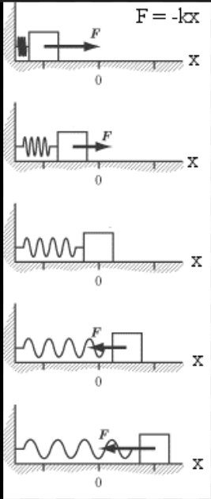

Hooke's Law describes how elastic materials behave when stretched or compressed. Formulated by Robert Hooke, it states that the restoring force exerted by a spring is proportional to the displacement from equilibrium.
F = -kx
A stretched or compressed spring stores potential energy and exerts a force that returns it to its original shape. The spring constant determines how stiff the spring is. The law holds true only within the material's elastic limit.
In dynamics, Hooke's Law models forces affecting motion, such as a block compressing a spring. The spring slows the object, stops it, and then pushes it back. Newton's second law is used alongside Hooke's Law to solve these problems.
When multiple springs are combined, their overall stiffness (spring constant) changes depending on how they are connected:
Series springs are softer than either spring alone.
Parallel springs are stiffer than either spring alone.
Question: A spring is stretched by 0.2 m. If k = 300 N/m, what is the force?
Solution: F = -kx = -(300)(0.2) = -60 N
Question: A force of 10 N stretches a spring 5 cm. Find k.
Solution: Convert 5 cm to meters: 0.05 m. k = F / x = 10 / 0.05 = 200 N/m
Question: A 1.5 kg block moving at 2 m/s compresses a spring (k = 500 N/m). How far?
Solution:
Question: A spring is compressed 0.1 m, and k = 150 N/m. Find the force direction and magnitude.
Solution: F = -kx = -150 × 0.1 = -15 N